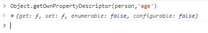

在学习JavaScript原型(prototype)和原型链(prototype chain)知识的时候，发现数据属性和访问器属性的重要性，通过不断的查找相关知识，浅显理解如下,若有差错，希望不吝赐教：
一、数据属性
1.什么是数据属性
默认的对象的属性就是数据属性，一般用于数据存储，有四个特性描述它的行为：
①属性值 [value]：用来保存这个属性的数据值,默认值是undefined;
②可写性 [writable]:表示是否能修改这个属性的值,默认值是true;
③可枚举性 [enumberable]:表示是否能通过for-in循环遍历返回,默认是true;
④可配置性 [configurable]:表示是否能通过delete删除属性从而重新定义属性，是否能修改属性特性，
是否能把数据属性修改为访问器属性。默认值是true;
通过Object.getOwnPropertyDescriptor()可以查询person中name的特性
通过Object.defineProperty()可以修改其特性
修改了person中name属性的writable为false之后，person中的name变为不可修改
2.什么是访问器属性
对应get/set操作，可用于在监听属性的存储过程中限制一些属性的行为
访问器属性也有四个特性描述:
①读取属性函数[get] : 在读取属性时调用的函数
②写入属性函数[set] :在写入函数时调用的函数
③可枚举性 [enumberable]:表示是否能通过for-in循环遍历返回,默认是false;
④可配置性 [configurable]:表示是否能通过delete删除属性从而重新定义属性，是否能修改属性特性，
是否能把访问器属性修改为数据属性。默认值是false;
访问器属性不能直接定义，必须使用Object.defineProperty()定义
访问器属性可以通过Object.getOwnPropertyDescriptor()查询

Object.defineProperty()定义了访问器属性（age），当age属性修改时，name属性和_age属性会相应修改。
由此可以想到数据的双向绑定
小结
在一个对象（person）中设置一个私有属性(_age:开头下划线代表私有属性----龟腚)，再为这个对象设置
访问器属性age（本身还未在对象中定义），当person.age进行修改时触发set函数，通过这个函数可以进行数据的操作，
比如数据的判断赋值等一系列操作，从而实现数据的双向绑定。